There is something genuinely magical about a pack of pretty patterned paper. The colors, the patterns, the textures, and the endless ways you can cut and fold it all invite little hands to start creating right away. Scrapbooking paper crafts are some of the most satisfying projects you can do with kids because the paper is already so beautiful that the results look polished and special with very little effort. ✂️
This list collects 20 of our favorite scrapbooking paper crafts for children of all ages. Whether you have a full pack of 12x12 patterned sheets or a stack of colorful cardstock, every idea on this list turns simple paper into something your child will want to keep, display, or give away. Each project is beginner-friendly, low-mess, and genuinely fun from start to finish.
What You'll Need
Most of these scrapbooking paper crafts use the same small set of supplies, so one trip to gather these basics will set you up for the whole list.
- Colorbok Patterned Cardstock 12x12, a 50-sheet assorted pack with 25 designs, acid-free and perfect for all these projects.
- Accent Design Cardstock Variety Pack 12x12, 72 solid-color sheets in 18 colors, great for backing and layering.
- Fiskars Paper Trimmer 12 inch, makes clean straight cuts on 12x12 sheets without needing a ruler and scissors.
- AdTech Archival Permanent Glue Runner, mess-free adhesive that bonds paper cleanly with no wrinkles.
- Knaid Washi Tape Set, 40 rolls, assorted patterns and widths ideal for borders, decorating, and layering.
- Scissors, for cutting shapes and details.
- Pencil and ruler, for measuring and marking folds.
- Stapler or hole punch, useful for binding mini books and tags.
20 Scrapbooking Paper Crafts to Make with Your Kids
1. Memory Scrapbook Page
Start with a 12x12 sheet of patterned paper as the background, then layer photos, journaling strips, and decorative paper shapes to tell a family story on one beautiful page. Let your child choose the patterned paper for the background and cut simple shapes like stars, hearts, or frames from coordinating colors. This is the heart of all scrapbooking paper crafts and one that children feel genuinely proud of when the page is done. Slip the finished page into a clear sleeve and it instantly looks like a real keepsake.
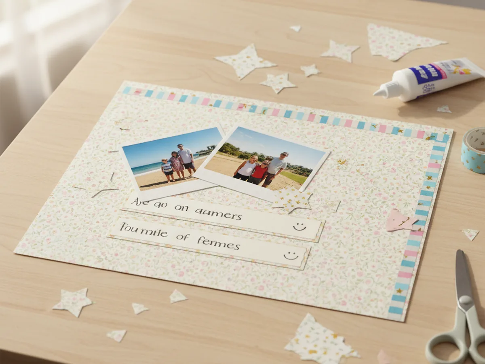
2. Paper Photo Frame
Cut a square frame from a piece of patterned cardstock, leaving a photo-sized opening in the center, then layer it over a solid-color backing and decorate the border with washi tape strips, small paper punches, or marker doodles. Fold a small paper stand at the back so it can sit on a shelf, or punch a hole at the top so it can hang. This is one of the most practical scrapbooking paper crafts because the finished frame is genuinely useful and looks much more thoughtful than a store-bought version.
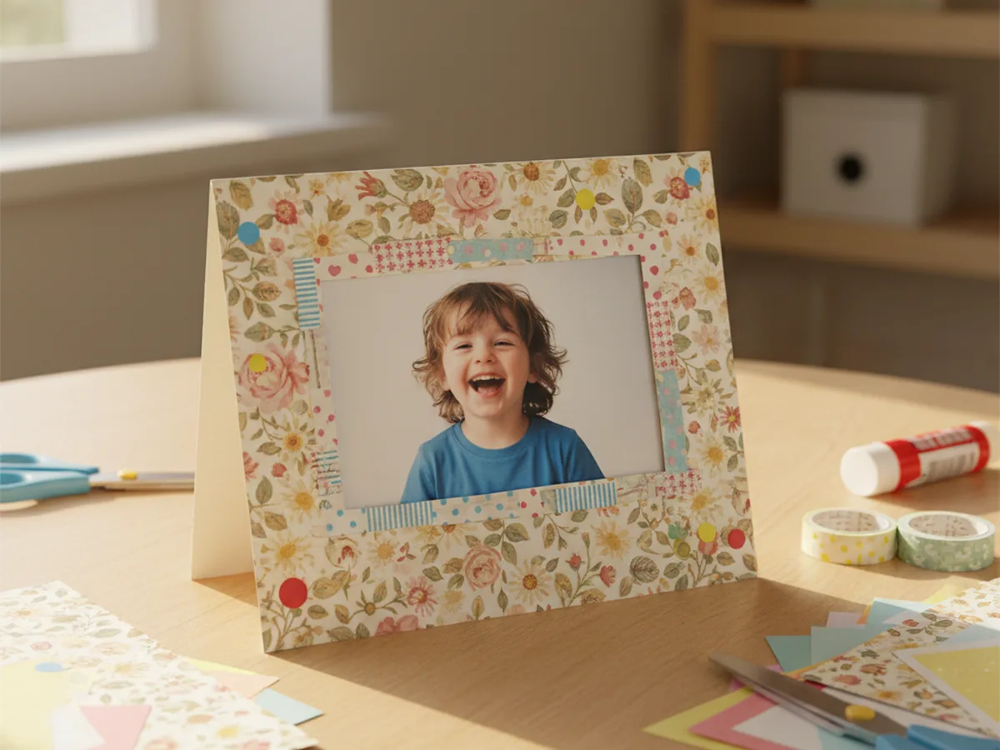
3. Folded Envelope Card
Fold a square sheet of patterned scrapbooking paper into a classic envelope shape by bringing three corners to the center and securing with a washi tape seal. Tuck a small folded notecard inside before sealing, and add a handwritten tag or sticker on the front. Kids love making these little envelopes as gift packaging, birthday cards, or secret notes for a sibling. As far as scrapbooking paper crafts go, this one requires no cutting at all, which makes it perfect for younger children who are still building their scissor skills.
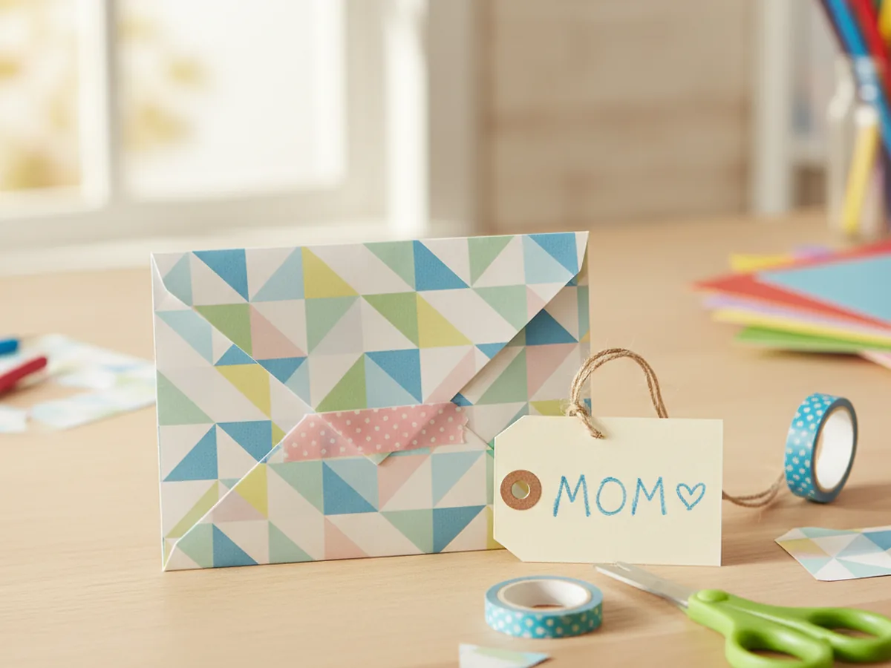
4. Paper Flower Card
Fold a sheet of cardstock in half for the card base, then cut simple layered flower shapes from patterned scrapbooking paper in two or three sizes and stack them with a small button or circle center. Glue the finished flower to the front of the card and add a washi tape border or a row of punched dots along the edge. The patterned paper does most of the visual work here so the flowers look beautiful even when the cutting is a little wobbly. This is one of those scrapbooking paper crafts that makes kids feel like real artists.
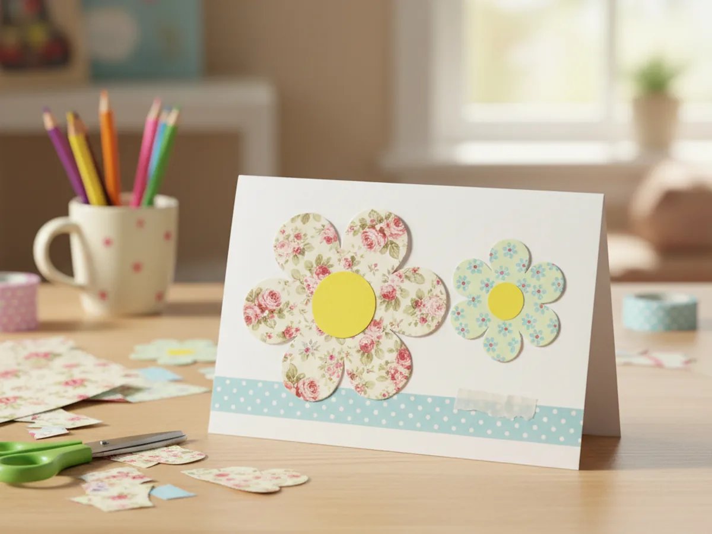
5. Decorative Gift Tags
Cut simple rounded rectangle or tag shapes from scraps of patterned scrapbooking paper, punch a hole at the top, and thread a ribbon or twine loop through. Decorate each tag with a stamped initial, a small paper cutout, or a strip of washi tape across one corner. A set of six matching gift tags made this way looks far more personal than anything you can buy at a store. Among quick scrapbooking paper crafts, these tags are ideal for kids because each one only takes a few minutes and the results are immediately satisfying.
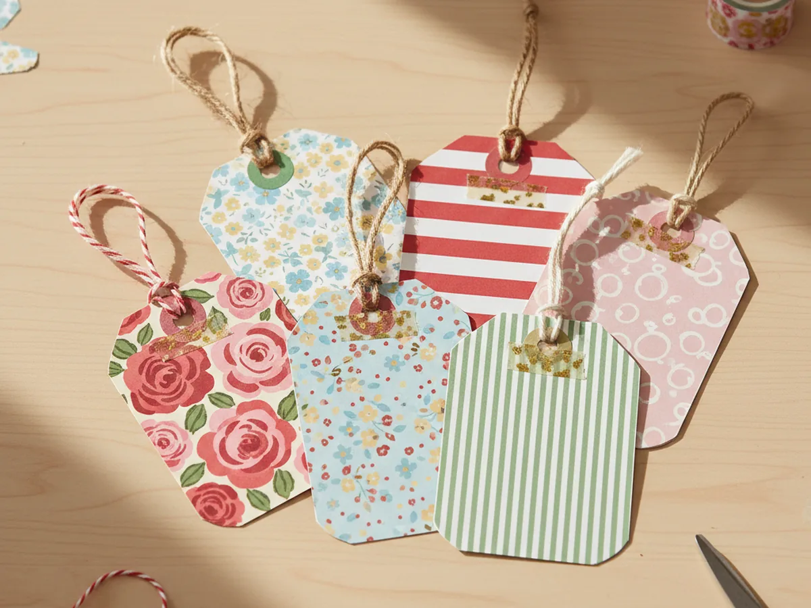
6. Mini Accordion Book
Cut four or five strips of patterned scrapbooking paper to the same width and tape the ends together end-to-end, then accordion-fold the whole strip into a compact little book. Add a slightly larger piece of solid cardstock to the front and back as covers. Kids can draw a story inside, glue in small photos, or use each panel for a different drawing. This is one of the most versatile scrapbooking paper crafts on the list because a child can spend twenty minutes or two hours filling it in depending on their age and interest.
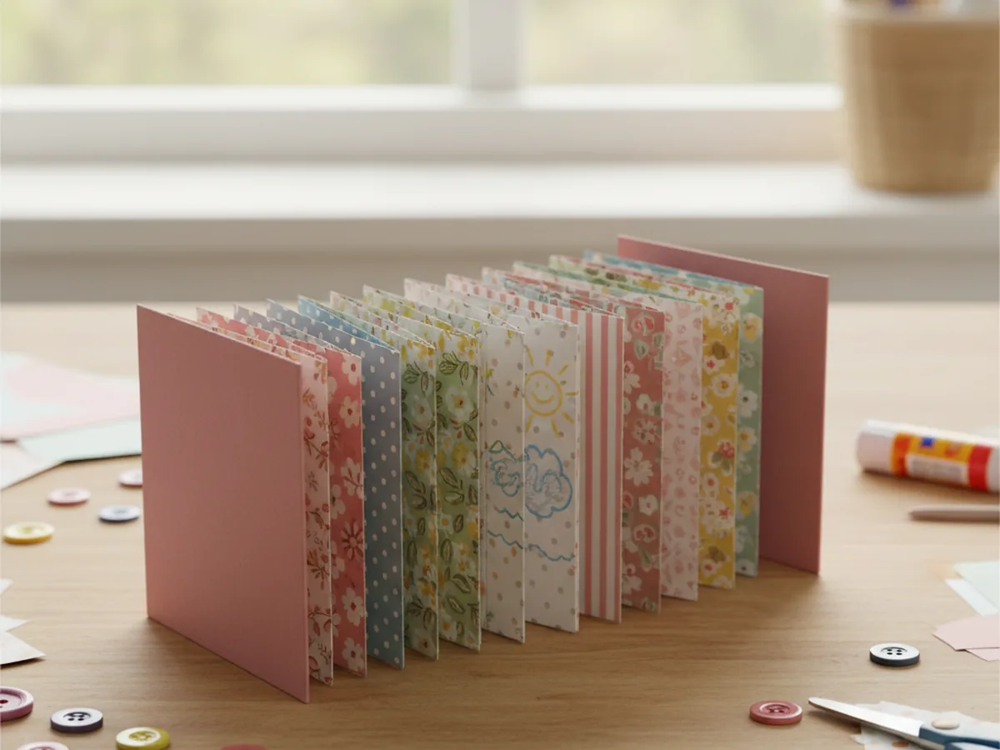
7. Washi Tape Bookmark
Cut a narrow rectangle from a piece of solid cardstock and decorate both sides with strips of washi tape laid end to end or overlapping to cover the whole surface in a colorful, patterned design. Round the bottom corners with scissors and punch a hole at the top for a decorative ribbon tassel. The result is a thick, sturdy, beautiful bookmark that holds up well in a real book. Kids who love reading often want to make a whole set of these scrapbooking paper crafts in different washi patterns. 🌸
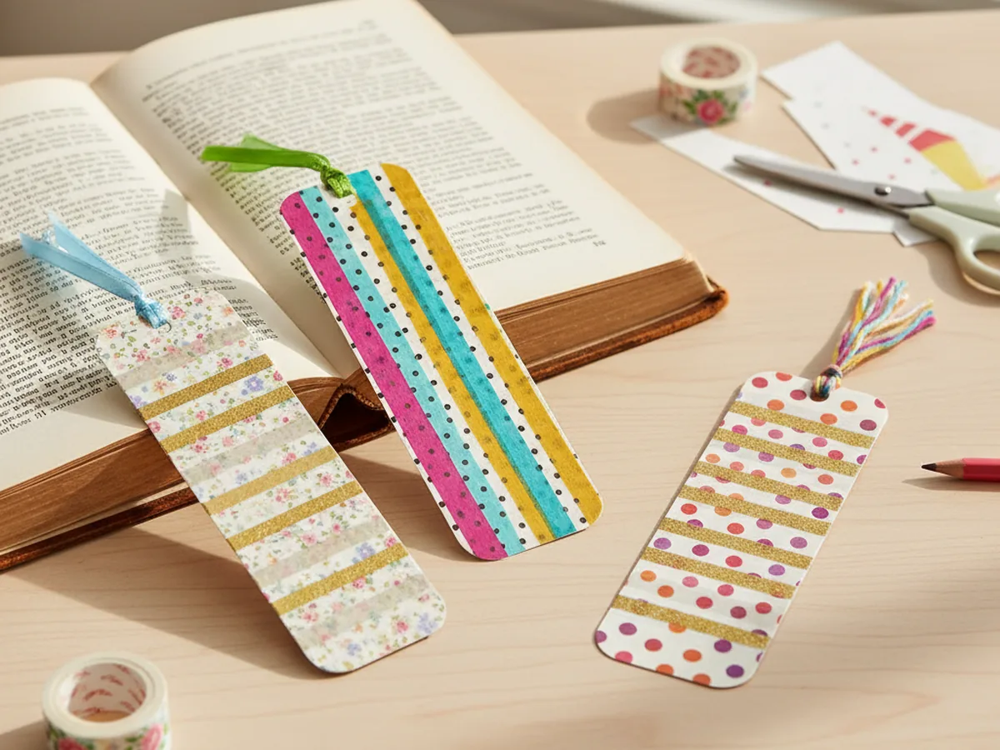
8. Paper Mosaic Art
Cut or tear patterned scrapbooking paper into small square or irregular pieces and glue them close together on a background sheet, leaving tiny gaps between pieces to create a mosaic effect. Kids can fill in a simple outline shape like a heart, star, or animal, or create a free-form abstract design. The beautiful patterns in scrapbooking paper make every mosaic look rich and colorful with almost no artistic skill required. This is one of the most meditative and satisfying crafts on this list for kids who enjoy focused, detail-oriented work.
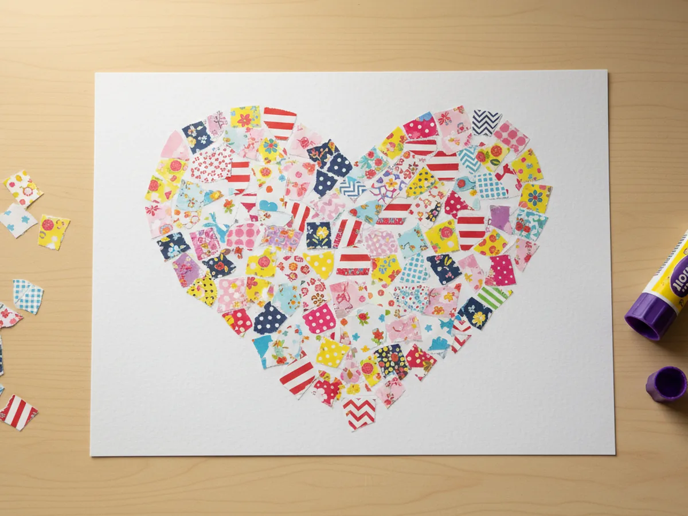
9. Paper Butterfly
Cut two matching wing shapes from a sheet of patterned scrapbooking paper and accordion-fold a narrow strip of solid paper for the body. Pinch the two wings together at the center and secure the body piece around the middle. Curl thin paper strips over a pencil for the antennae and glue them at the top of the body. The printed patterns on the wings make these butterflies look incredibly detailed and impressive even though the cutting and folding are very simple. This is one of those scrapbooking paper crafts where the finished result gets a genuine reaction.
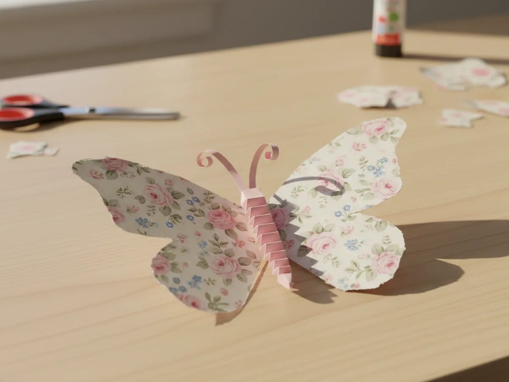
10. Layered Greeting Card
Start with a solid cardstock card base and layer two or three smaller rectangles of different patterned scrapbooking papers on the front, each one slightly smaller than the one beneath it. Add a handwritten message on a small journaling tag and attach it with the glue runner. The layered look is a classic scrapbooking paper crafts technique that older kids learn quickly and love because it makes every card look deliberately designed and cohesive. Birthday, thank-you, and holiday cards made this way always feel more special than store-bought.
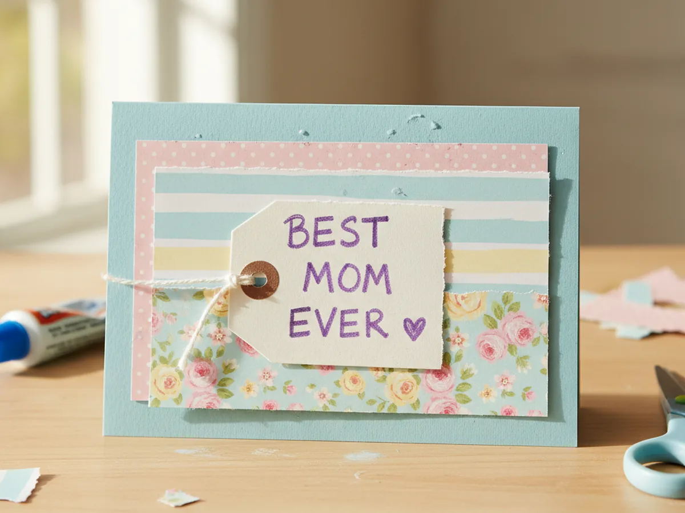
11. Paper Pinwheel
Cut a square of patterned scrapbooking paper and make diagonal cuts from each corner toward the center, stopping about an inch short. Fold every other point into the center and secure with a brad through all the layers, then attach to a wooden dowel or pencil through the back of the brad. The pinwheel spins beautifully in the breeze and the patterned paper makes the spinning effect especially vivid. Among scrapbooking paper crafts, this is one of the most rewarding for kids because it has a real moving, playful result they can carry outside.
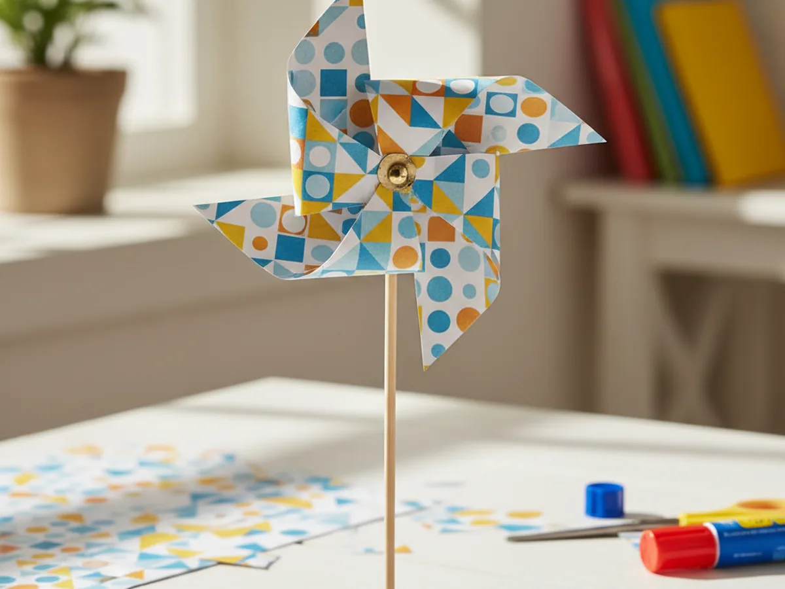
12. Paper Lantern
Fold a sheet of patterned scrapbooking paper lengthwise and cut parallel slits across the fold from the folded edge toward the open edge, stopping about an inch from each side. Unfold and curve the paper into a cylinder, stapling or taping the short edges together so the slits bow outward to form the lantern's body. Add a strip of contrasting paper as a handle at the top. The patterned paper transforms this classic scrapbooking paper craft into something that looks gorgeous hanging from a string at a party or displayed on a shelf.
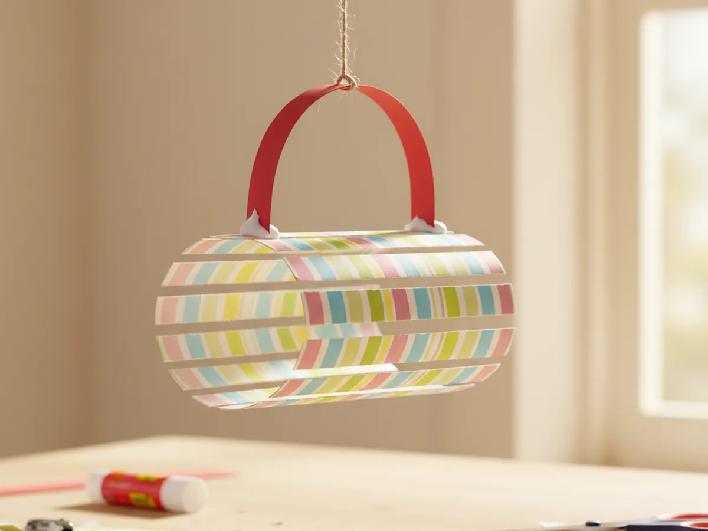
13. Paper Crown
Cut a long strip of patterned scrapbooking cardstock wide enough for a crown and use scissors to cut a zigzag or scalloped edge along the top. Size the strip to fit your child's head and tape or staple the ends together. Let younger children decorate it with stickers, washi tape strips, or glitter glue dots before wearing it. The printed pattern on the cardstock already makes the crown look regal and special before any decorating begins, which is one of the reasons this is one of the most crowd-pleasing scrapbooking paper crafts for younger kids.
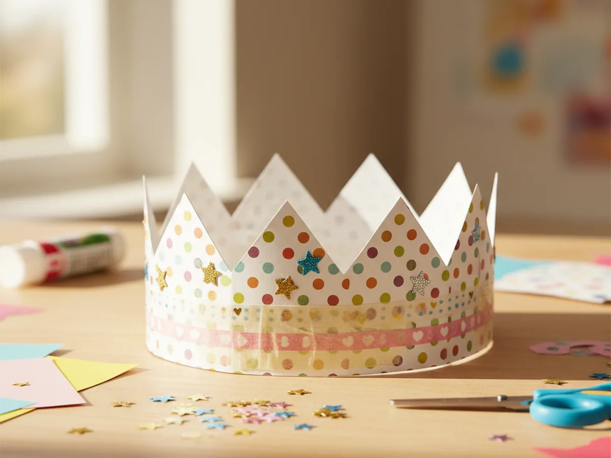
14. Bunting Banner
Cut a series of triangle pennant shapes from assorted patterned scrapbooking papers, punch a hole through the two top corners of each one, and thread them onto a length of twine or ribbon. Alternate the patterns so the finished banner looks bright and layered when hung across a wall or mantel. This is one of the most practical scrapbooking paper crafts for parties, birthdays, or room decor because it comes together quickly and looks genuinely festive. Kids enjoy choosing which patterns go next to each other in the sequence.
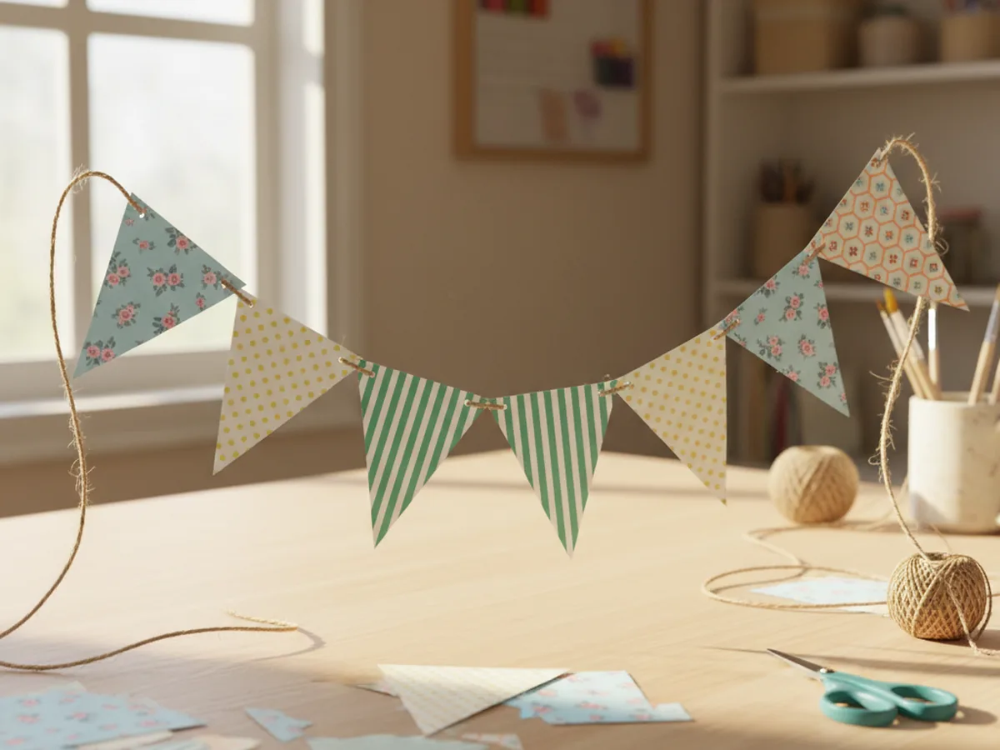
15. Paper Rosette
Cut a long strip of patterned scrapbooking paper and accordion-fold it all the way along its length, then curve the folded strip into a circle and glue or staple the two ends together to form a fan rosette. Add a small circle of coordinating paper glued to the center for a polished finish. Paper rosettes look stunning clustered together on a wall in different sizes and coordinating patterns. This is one of the most impressive-looking scrapbooking paper crafts on the list relative to how simple the technique actually is.
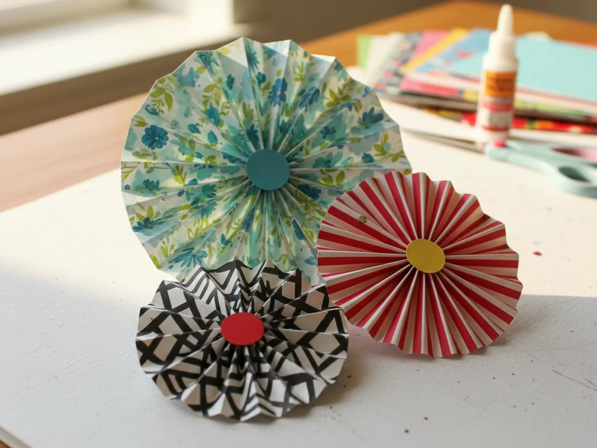
16. Rolled Paper Flower
Cut a spiral from a circle of patterned scrapbooking paper, starting at the outside edge and spiraling inward, then roll the strip from the outside end inward and let the loose end form the base. The spiral naturally unfurls into a beautiful layered rose shape as you roll it. These rolled flowers look stunning in a small vase, glued onto a card, or clustered on a wreath form. Older kids get very absorbed in this one because each flower comes out slightly different, making scrapbooking paper crafts feel genuinely exploratory.
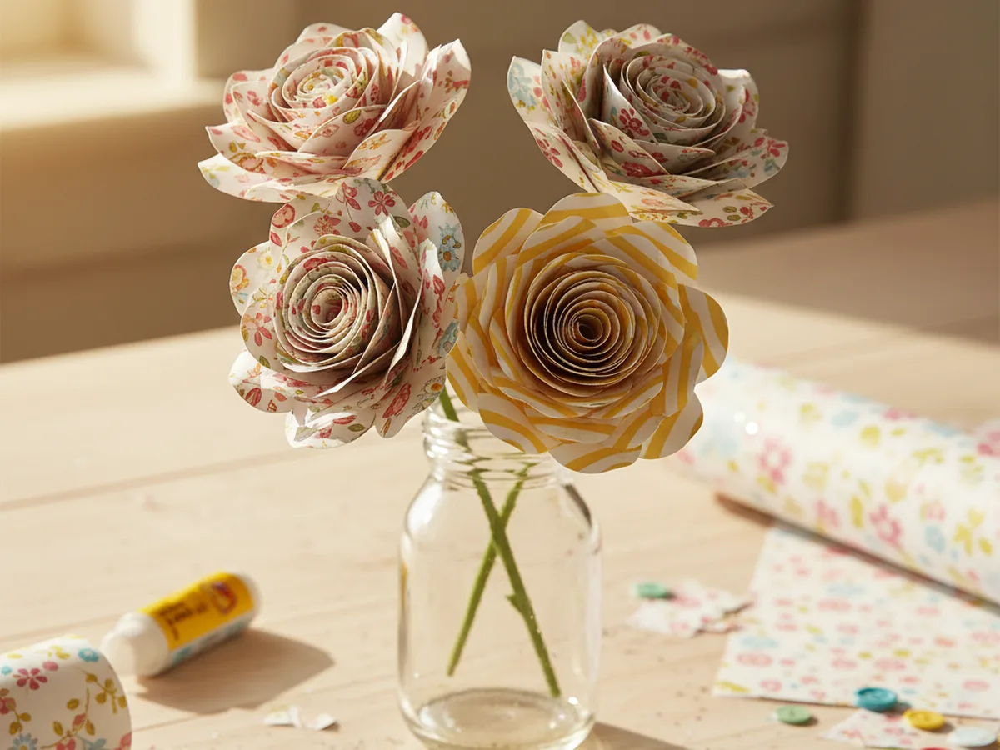
17. Paper Collage
Tear and cut assorted pieces of patterned scrapbooking paper into free shapes and layer them onto a background sheet to build an abstract or representational scene. Kids can create a landscape, a house, an animal, or a completely abstract design. The variety of patterns available in a typical scrapbooking pack makes every collage rich with texture and color even when the shapes are simple. This open-ended project is one of the most accessible scrapbooking paper crafts for toddlers and preschoolers because there is no wrong way to do it.
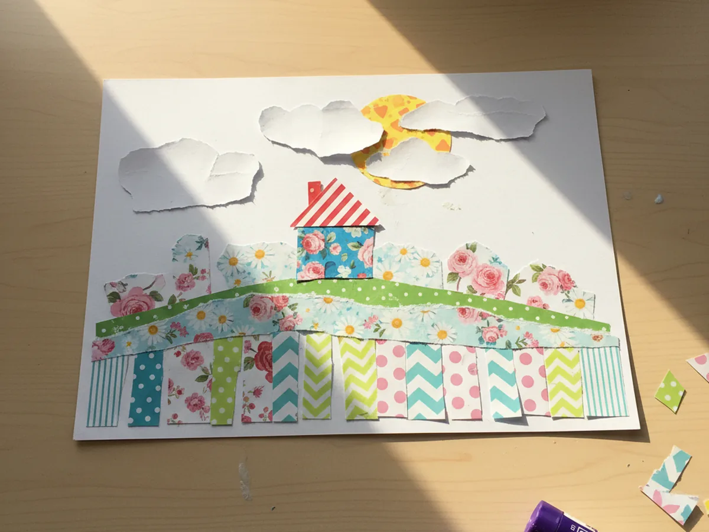
18. Paper Heart Box
Fold two matching squares of patterned scrapbooking paper into a simple square origami box shape, making one slightly smaller than the other for the lid and base. Use a bone folder or the back of a spoon to sharpen the folds so the box sits flat and holds its shape. Decorate the lid with a small paper heart or washi tape strip. These boxes make wonderful little gift containers and are one of the most practical finished products in all of scrapbooking paper crafts. Older kids can make several and use them to store small treasures or give as presents.
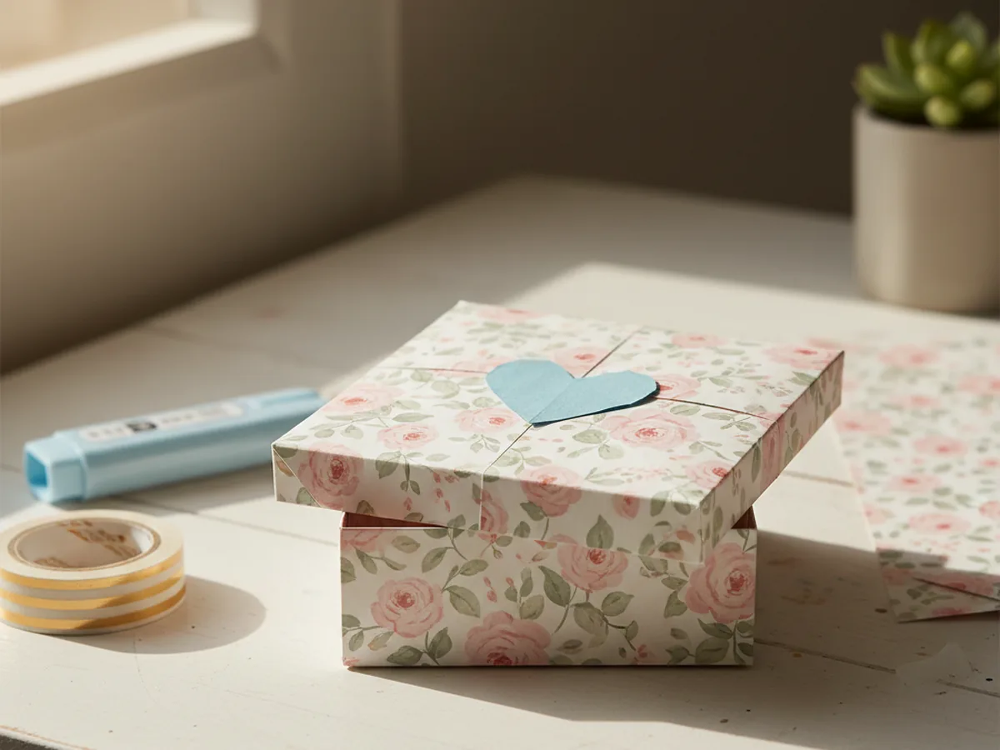
19. Decorated Journal Cover
Take a plain composition notebook or small spiral journal and cover the front with pieces of patterned scrapbooking paper trimmed to fit, layered and adhered with the glue runner for a smooth, wrinkle-free result. Add a strip of washi tape along the spine edge and a small paper tag with your child's name. The finished journal looks completely transformed and kids are always much more motivated to write or draw in a book that they decorated themselves. This is one of the most personally meaningful scrapbooking paper crafts on the list because the result is used every day.
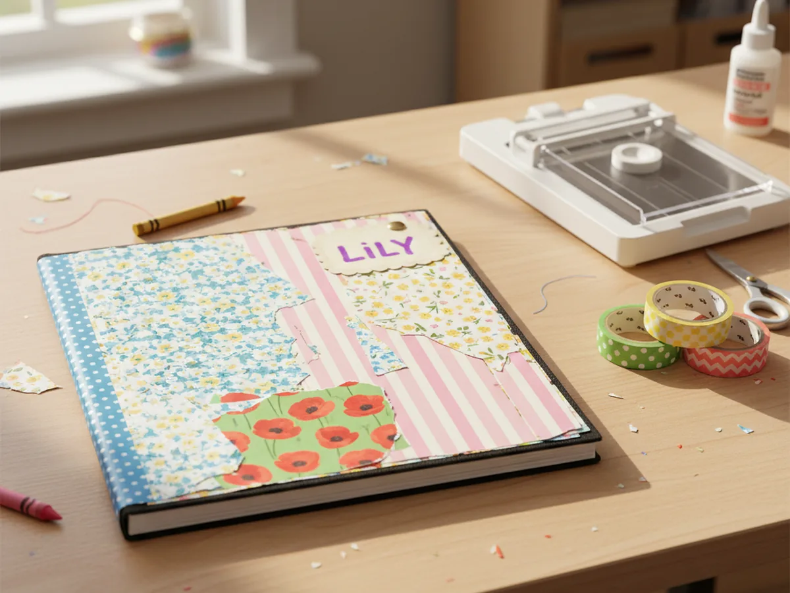
20. Paper Mobile
Cut simple shapes from patterned scrapbooking paper, such as stars, moons, hearts, and circles in different sizes, and hang them on threads of varying lengths tied to a small wooden dowel or straw. Balance the dowel carefully so it hangs level, then hang the finished mobile near a window or above a crib or reading nook. The patterned paper catches the light and spins gently with any air movement, creating a peaceful and beautiful display. This is one of those scrapbooking paper crafts that takes only a little time to make but ends up becoming a lasting, cherished part of a child's room. 💛
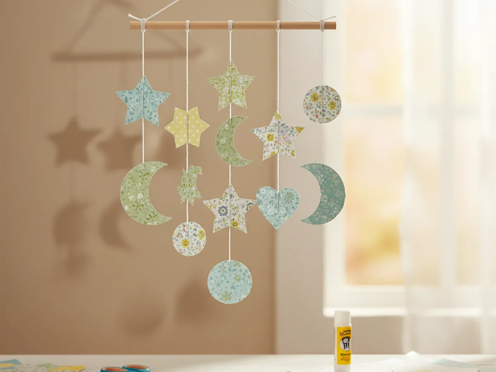
Final Thoughts
One of the best things about scrapbooking paper crafts is that the paper does a lot of the work for you. When you start with a sheet that already looks beautiful, even simple cutting and folding leads to something that feels genuinely special. These 20 ideas cover a huge range of what patterned paper can do, from memory pages and mini books to flowers, crowns, and mobiles, so there is always something new to try no matter how many crafting afternoons you have already had together.
Pick one idea that feels right for today, grab your favorite patterned papers, and enjoy the time you make together. The finished crafts are lovely, but the moments you share while making them are what really last.
More Crafts You'll Love
If you enjoyed this list, there are plenty more paper craft ideas waiting for you.
Happy crafting, and enjoy every moment you make together. ✨